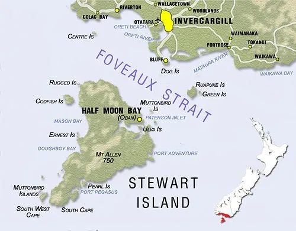
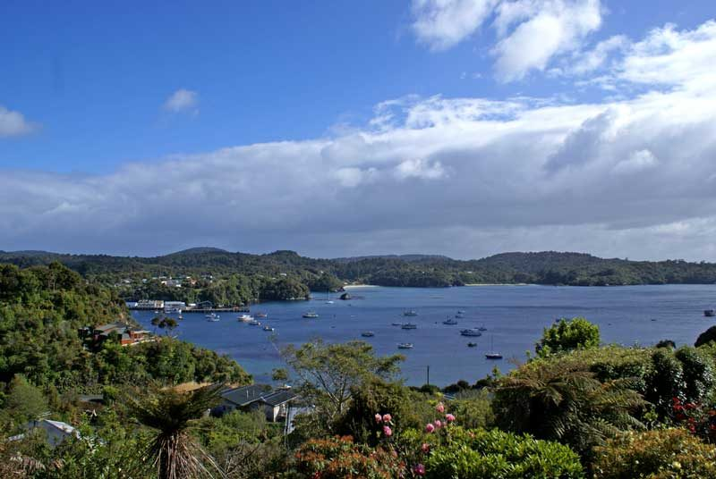
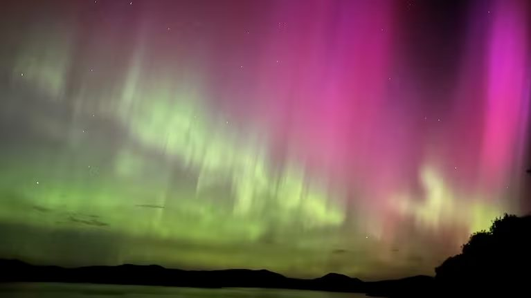
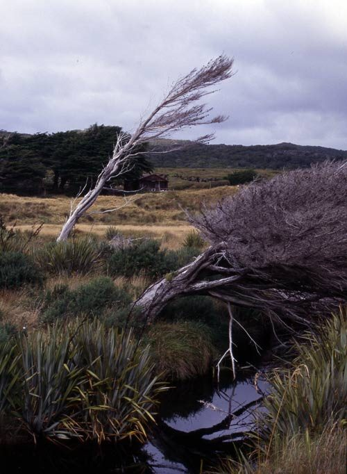
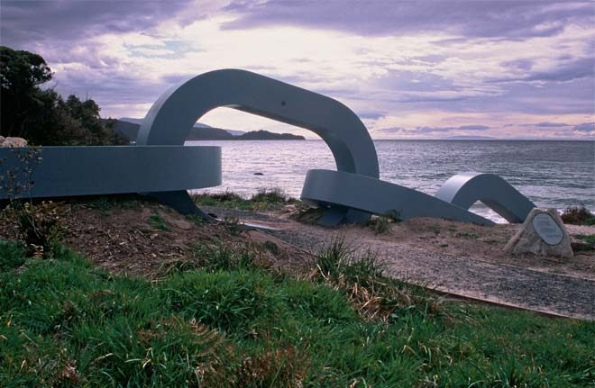

New Zealand’s third main island
The roughly triangular island of Rakiura Stewart Island is New Zealand’s third largest island at 1,680 square kilometres. It lies south of the South Island.

Halfmoon Bay, the centre of settlement, lies on the north-east coast. It is 39 kilometres from Bluff – a ferry trip of one hour across Foveaux Strait, the stretch of water which separates the island from the Southland coast.
The island is bisected by latitude 47º south. Its hills and mountains make it readily visible from the mainland, which locals refer to as ‘the other side’. Beyond the southern tip of Rakiura Stewart Island lies the Southern Ocean – this is New Zealand’s ‘land’s end’.

Apart from the small areas of settlement around Halfmoon Bay, the island retains its natural forest cover. There are two main mountainous areas, one to the island’s north and one to the south. Down the middle of the island, from Mason Bay in the west to Paterson Inlet/Whaka ā Te Wera in the east, a low-lying area of land nearly cleaves the island in two. There are two major inlets or harbours. Paterson Inlet is the larger. Port Pegasus/Pikihatiti on the south-east coast is the last sheltered water for boats heading further south.
Kiwa’s pathway and Kewa’s lost tooth
Māori knew Foveaux Strait as Te Ara a Kiwa (the pathway of Kiwa). Kiwa was an ancestor who tired of crossing the isthmus (land bridge) which, according to the story, then connected Rakiura to Southland. He asked the whale, Kewa, to eat through the land to create a channel so Kiwa could cross by waka. Crumbs that fell from the whale’s mouth became islands in Foveaux Strait. Solander Island (Hautere), which guards the western approaches of the strait, was also known as Te Niho a Kewa, a tooth lost from the whale’s mouth.
Names

The island’s English name acknowledges William Stewart, first mate on the sealer Pegasus, who charted Port Pegasus in 1809. Its Māori name, Rakiura, which means ‘glowing skies’, comes from the southern lights, the aurora australis. Rakiura is not the only Māori name for the island – at one time it was also known as Motunui (big island). In oral tradition the demigod Māui fished up the North Island (Te Ika-a-Māui – the fish of Māui) and circumnavigated the South Island (Te Wai Pounamu – greenstone waters). To keep his waka (canoe) from drifting away he pulled up a stone (Stewart Island) from the seabed as an anchor and named it Te Punga o Te Waka o Māui (the anchor of the waka of Māui).
Climate and waterways
The island has a cool temperate climate without extremes in temperature. Because of the surrounding ocean, temperatures are often milder than those in the southern South Island. The weather is very changeable – in a typical year it rains on 210 days at Halfmoon Bay, but much of this comes as showers. There are also microclimates – the north and east coasts are more sheltered than the south and west coasts. Alpine areas in the far south of the island can receive 5,000 millimetres of rain in a year, while Halfmoon Bay gets 1,600 millimetres.

A feature of the island’s streams is their brown tannin-stained waters and low sediment load. The Freshwater River, with its surrounding wetlands, is one of the country’s few large remaining lowland rivers free of introduced species.
Rakiura National Park

Rakiura National Park, created in 2002, is New Zealand’s most recent national park. It covers 157,000 hectares – about 85% of the island’s land area. The island has a long history of reserves. Following failed attempts to encourage settlement and development, all forested crown land was set aside as a state forest in 1886 and by the early 1900s the majority of the island’s land had reserve status. Areas in eastern parts of the island, around Halfmoon Bay and Codfish Island (Whenuahou), are also conservation land but are not part of the National Park. On the eastern coast, around East Cape and Port Adventure, there is a large tract of land owned by the Rakiura Māori Land Trust.
Walrond, C. (2015, May 1). Stewart Island/Rakiura: New Zealand’s third main island. Te Ara – The Encyclopedia of New Zealand. https://teara.govt.nz/en/stewart-islandrakiura/page-1